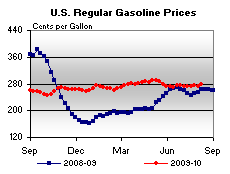
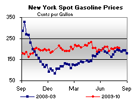
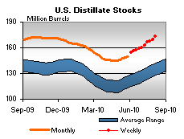

Released on August 11, 2010
(Next Release on August 18, 2010)
Jet fuel markets: Is a turnaround in sight?
For 28 consecutive months between the beginning of 2008 and the spring of 2010, consumption of jet fuel by U.S. passenger and freight airlines fell from its level in the same month of the prior year. The skid in jet fuel use during this period was driven by a sharp spike in oil prices that was soon followed by a sharp downturn in global economic activity.
By late 2009, there were initial indications of a turnaround in air transport markets, as total revenue ton-miles, a broad measure of industry activity, rose in November 2009 from its level in the same month of the prior year for the first time since May 2008. In March 2010, air carrier capacity also rose above the year-ago same-month level for the first time in almost two years. But these developments had a delayed impact on commercial purchases of jet fuel. During May 2010, the most recent month for which data are available, commercial jet fuel purchases were up from a year ago for the first time since December 2007. The lagged response of jet fuel consumption reflects ongoing increases in fuel efficiencies of the aircraft fleet.
The last time that annual jet fuel use by U.S. passenger and freight airlines grew was in 2007, when fuel consumption increased by 0.9-percent as airlines’ total revenue ton-miles rose by 2.7 percent and available capacity by 3.1 percent. (Table 1).
Table 1: Jet fuel market indicators, percent change from prior year |
Year
|
Real
GDP |
Commercial
jet
fuel
consumption |
Real
jet fuel
price |
Real
ticket
price |
Air
carrier
capacity |
Revenue
ton-miles |
2007 |
2.1 |
0.9 |
5.7 |
- 1.1 |
3.1 |
2.7 |
2008 |
0.4 |
- 5.4 |
35.3 |
7.9 |
- 4.0 |
- 4.0 |
2009 |
- 2.4 |
- 9.5 |
- 43.9 |
- 8.2 |
- 6.5 |
- 7.9 |
| 2010* |
3.1 |
- 0.1 |
26.3 |
6.3 |
0.4 |
2.2 |
| 2011* |
2.7 |
1.8 |
6.0 |
2.0 |
2.8 |
3.3 |
Notes: Commercial purchases of jet fuel, a proxy for fuel consumption by
passenger and
freight airlines, are reported by the
Federal Aviation
Administration
and published by the
Air Transport Association
(http://www.airlines.org/Energy/FuelCost/Pages_Admin/FuelCost.aspx).
Air carrier capacity = total available ton-miles of passenger freight transport
capacity.
Revenue ton-miles = total revenue ton-miles of passenger and freight transport.
*EIA Projection. Source: EIA, Short-Term Energy Outlook, August 2010. |
In response to both a spike in oil prices to new records and a slowing economy, commercial jet fuel purchases in 2008 fell 5.4 percent, as the 35-percent hike in fuel prices in 2008 was carried over into ticket prices, which, after inflation, rose 7.9 percent that year. The higher prices contributed to a decline in total revenue ton-miles (passengers and freight) of 4.0 percent. Air carriers responded to the fewer passengers and less freight by reducing capacity by 4.0 percent.
The jet fuel market decline continued into 2009. However, jet fuel costs and ticket price inflation were no longer the issues. Instead, it was the underlying economy: in the U.S., inflation-adjusted gross domestic product shrank 2.4 percent. As a result, total revenue ton-miles declined 7.9 percent and air carriers further reduced capacity by 6.5 percent. The lower capacity and utilization contributed to a 9.5-percent decline in the purchases of commercial jet fuel.
The most recent EIA Short-Term Energy Outlook, published yesterday, calls for a 0.1-percent decline in commercial jet fuel purchases in 2010, followed by a 1.8 percent increase in 2011. During these two years, real GDP is projected to increase by an average of 2.9 percent per year. The jet fuel consumption growth reflects the projection of continued but moderate increases in economic activity, partially offset by ongoing increases in fleet-wide fuel efficiencies. It also reflects airlines’ desire to restore the industry to profitability by constraining capacity expansions and, thereby, raising capacity utilization rates. As a result, ticket prices can be expected to firm up. It is unlikely that the levels of jet fuel purchases will reach those previously seen in 2007 for several years to come.
U.S. Average Retail Gasoline Prices Gain 5 Cents
The U.S. average retail price for regular gasoline increased almost five cents to $2.78 per gallon after increasing three out of the last four weeks by a total of six and a half cents. This week’s price is $0.14 per gallon higher than this time last year. Prices were up throughout the country, with the Midwest seeing the largest price increase of 6 cents to $2.76 per gallon, while Gulf Coast prices also rose almost 6 cents to $2.64 per gallon. East Coast and Rocky Mountain prices each gained close to four cents to reach $2.71 and $2.79 per gallon, respectively. Meanwhile, West Coast prices remained the highest in the Nation after adding almost 4 cents to average $3.11 per gallon; California prices increased over four cents to $3.17 per gallon.
Retail diesel fuel prices rose six cents to reach $2.99 per gallon, which is $0.37 per gallon higher than last year. Prices were up throughout the country, with the East Coast and Midwest showing the largest price increases of 7 cents per gallon to average $3.00 and $2.97 per gallon, respectively. Gulf Coast prices were up six cents to $2.95 per gallon, while Rocky Mountain prices increased five cents to $2.99 per gallon. West Coast prices were the highest in the country, gaining 5 cents to average $3.12 per gallon, while California prices increased by the same amount to reach $3.18 per gallon.
Inventories of Propane Rise Again
Propane inventories in the U.S. rose by 2.3 million barrels last week to end at 57.4 million barrels, roughly 12 million barrels lower than the same week last year. The Midwest region led the build with 1.3 million barrels of new propane stocks. The Gulf Coast region added 0.7 million barrels while the East Coast and the Rocky Mountain/West Coast regions each added 0.1 million barrels. Propylene non-fuel use inventories represented 4.9 percent of total propane/propylene stocks.
Text from the previous editions of “This Week In Petroleum” is accessible through a link at the top right-hand corner of this page.
| |
|
| Retail Prices (Cents Per Gallon) |
|  |
|
| Retail Data |
Changes From |
Retail Data |
Changes From |
| 08/09/10 |
Week |
Year |
08/09/10 |
Week |
Year |
| Gasoline |
278.3 |
 4.8 4.8 |
13.6 |
Diesel Fuel |
299.1 |
6.3 |
36.6 |
|
| Spot Prices (Cents Per Gallon*) |
|
|
|  |
|
| Spot Data |
Changes From |
| 08/06/10 |
Week |
Year |
| Crude Oil WTI |
80.67 |
1.82 |
9.70 |
| Gasoline (NY) |
204.8 |
 -1.2 -1.2 |
12.6 |
| Diesel Fuel (NY) |
216.6 |
6.8 |
23.8 |
| Heating Oil (NY) |
211.6 |
7.8 |
23.1 |
| Propane Gulf Coast |
111.1 |
2.9 |
23.0 |
|
|
| *Note: Crude Oil WTI Price in Dollars per Barrel. |
|
| Stocks (Million Barrels) |
|
 |
 |
|
| Stocks Data |
Changes From |
Stocks Data |
Changes From |
| 08/06/10 |
Week |
Year |
08/06/10 |
Week |
Year |
| Crude Oil |
355.0 |
-3.0 |
3.0 |
Distillate |
173.1 |
3.5 |
10.9 |
| Gasoline |
223.4 |
0.4 |
11.5 |
Propane |
57.445 |
2.290 |
-12.040 |
|
| |